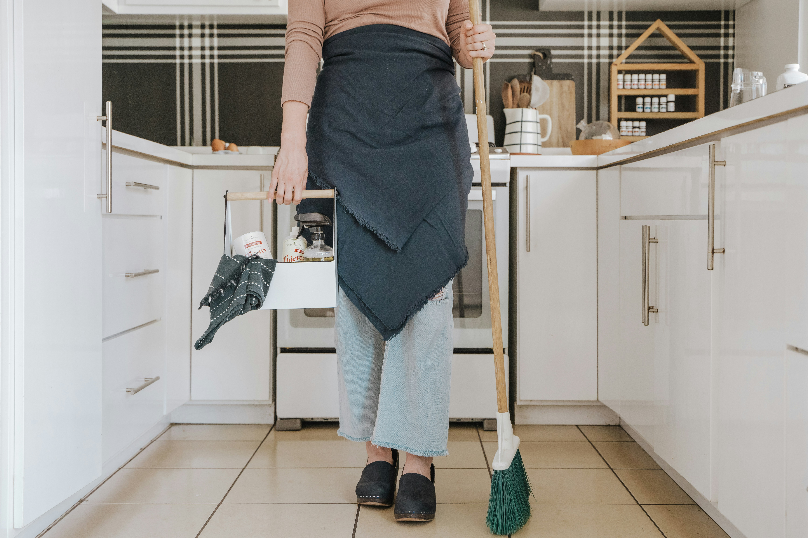

Pryl 1900 kan också erbjuda de absolut bästa helhetslösningarna för dig som har ett hem eller ett dödsbo där du behöver avyttra saker, men även vill att någon tar hand om överblivna föremål för återvinning och utför en professionell flyttstädning av högsta klass. Bortforsling av saker som inte bedöms vara kommersiellt gångbara samt städning utförs av Ärlebo Företagsstäd, ett företag som Pryl 1900 har valt att samarbeta med eftersom de har gedigen erfarenhet från städning av både privata hem och företagslokaler, en styrka på över 10 anställda, toppbetyg på både Google och Facebook och som dessutom erbjuder nöjd kund-garanti. Tanken är att respektive företag sköter det det är vassast på – Pryl 1900 köper värdesaker och Ärlebo Företagsstäd tömmer och städar. Det blir bäst resultat så med proffs för vardera uppgift! Du som kund behöver bara kontakta mig, Micke, på Pryl 1900 för mer information. Ring eller skicka sms till 0704485143 eller mejla micke@pryl1900.se.
